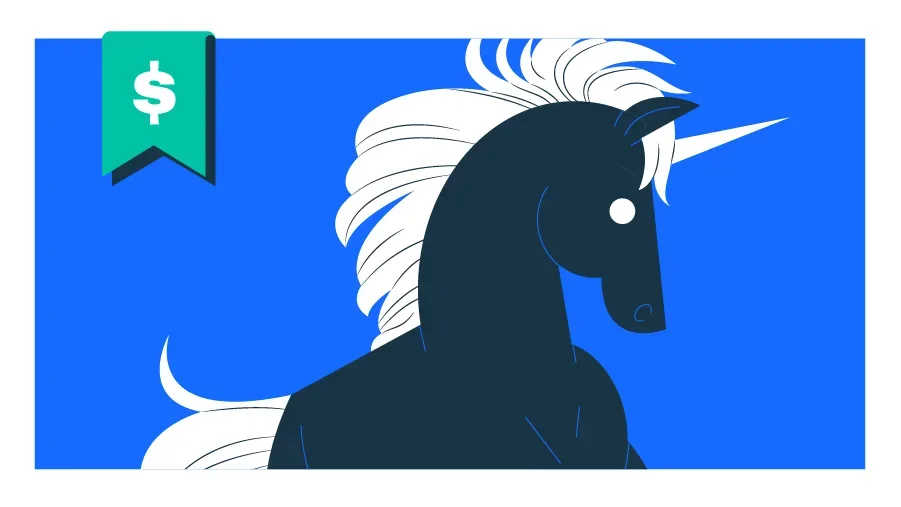
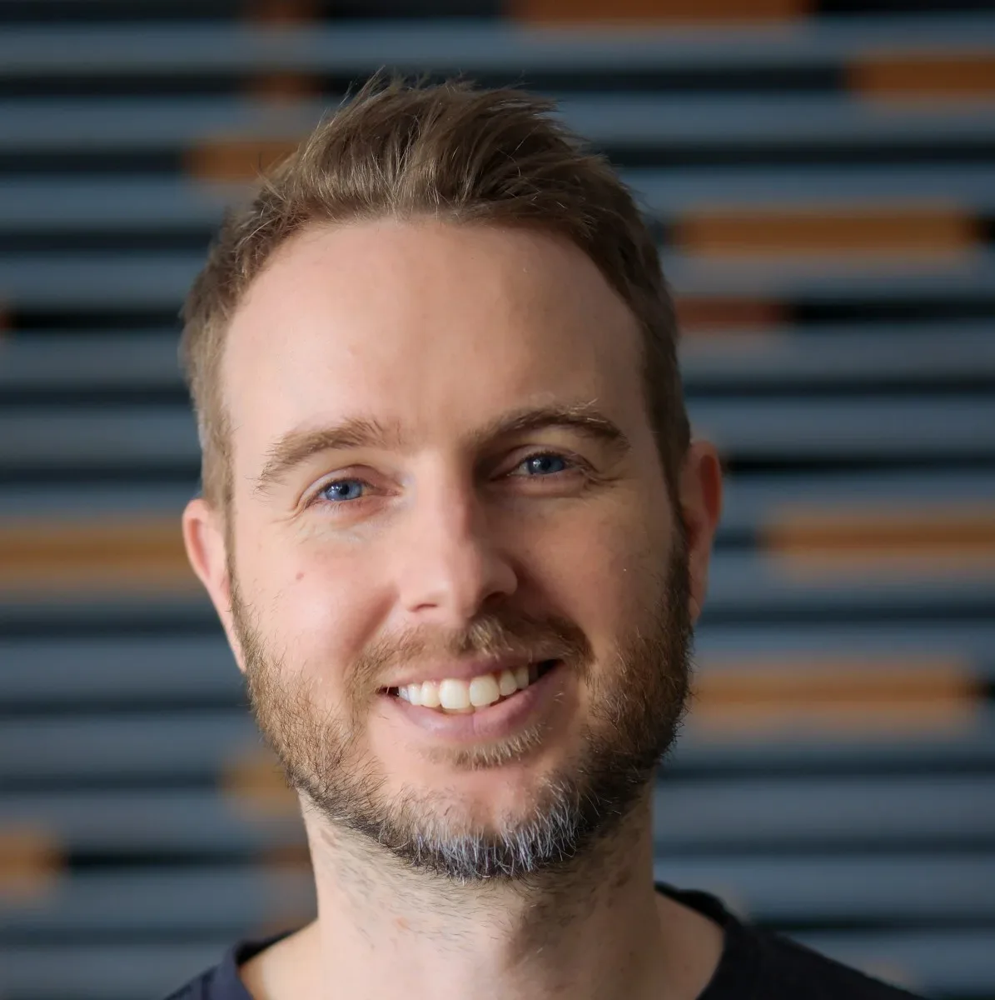
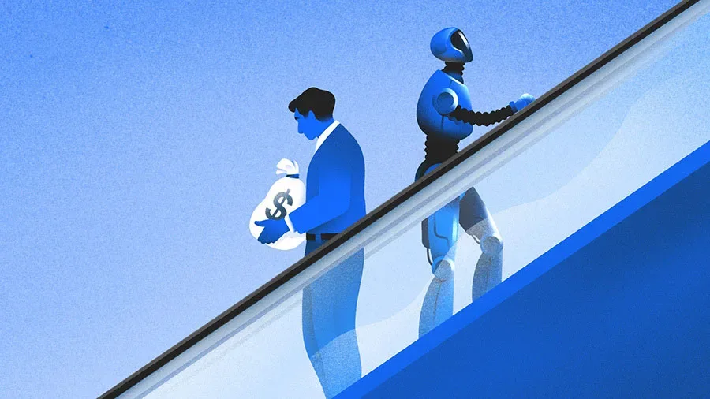
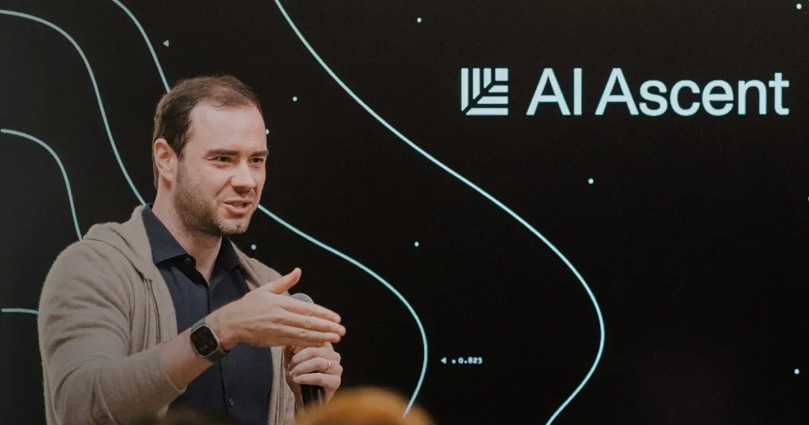

СтартапыРоссия
OpenAI рассматривает резкое снижение цен на токены под давлением Anthropic
OpenAI готовится резко снизить цены на токены — Anthropic поджимает
vc.ru AI/стартапы
11 июн.Интересные AI-стартапы — зарубежные и российские. Идеи, продукты и подходы, которые можно взять на вооружение.
62 материалов
OpenAI готовится резко снизить цены на токены — Anthropic поджимает

Jedify хочет стать слоем бизнес-контекста для ИИ-агентов: $24 млн и партнёрство со Snowflake.

Полупроводниковые стартапы продолжают привлекать миллиарды: $10,7 млрд инвестиций в 2026 году

Илон Маск презентовал спутник AI1: орбитальные дата-центры с чипами Nvidia и мощностью 150 кВт

«Алиса» записала PIN-код карты и выдала его по хитрому запросу — тест первых наушников «Яндекса»

Первые наушники «Яндекса» с «Алисой» — что умеет ИИ-ассистент в ухе и чего пока не может

29 единорогов за один месяц: кто получил миллиарды и почему ИИ-внедрение обогнало ИИ-разработку
Прямые продажи возвращаются в B2B-софт благодаря шести– и семизначным контрактам вертикальных ИИ-стартапов.

Ramp — $750 млн, Supabase — $500 млн, Helion — $465 млн: разбираем крупнейшие раунды недели

Путин на ПМЭФ-2026: 30% роста e-commerce, стратегии ИИ и IT-суверенитет — что решили для цифровой экономики

Supabase удвоил оценку до $10 млрд за 8 месяцев — заслуга ИИ-кодинга

Три стартапа привлекли $268 млн: металлообработка, метаболическое здоровье и групповые туры.

Платежные ИИ-стартапы для истцов привлекли $682 млн, но оборона — следующий большой рынок.

Anthropic оценили в $965 млрд и подали заявку на IPO — раньше OpenAI. Что стоит за этим ростом?

Китай закрывает ИИ-таланты внутри страны — что стоит за новыми правилами и делом Manus

Бостон бьёт четырёхлетний рекорд по инвестициям — но ИИ-бум проходит мимо него

Как основательница Clyx собрала $14 млн, выступая на ужинах вместо рассылки питч-деков

Anthropic привлек $65 млрд при оценке $965 млрд, обойдя OpenAI на $125 млрд

Венчурные инвесторы всё активнее вкладываются в стартапы, строящие ИИ-решения для оборонной и энергетической отраслей.

Один разработчик три года строил мессенджер с ИИ без внешних серверов — и наконец пробился в Google Play

Гендиректор Standard Chartered назвал увольняемых «менее ценным капиталом» — и пожалел об этом

Карманный Linux-компьютер с ИИ-ускорителем от создателей Flipper Zero — что умеет Flipper One
Stanford, Harvard и MIT забирают треть венчурных раундов — данные Crunchbase за 2026 год

Китайские робостартапы побили рекорд финансирования: $5,6 млрд за пять месяцев и очередь на IPO

Шесть компаний забрали $90 млрд из венчурного рынка США. Что осталось остальным 6000?

Meta увольняет 8000 и одновременно переводит 7000 в ИИ — что происходит внутри компании

«Сбер» анонсировал запуск коммуникационной платформы с ИИ-помощником к 2027 году и назвал целевые доли рынка.

6–8 карт в кошельке — и всё равно платишь не той. Как с этим борется Cashmate

Брокман — $30 млрд, Суцкевер — $7 млрд: суд вскрыл доли сооснователей OpenAI

Sequoia собрала 150 лидеров ИИ и объяснила, где стартапам искать точку роста в 2026 году